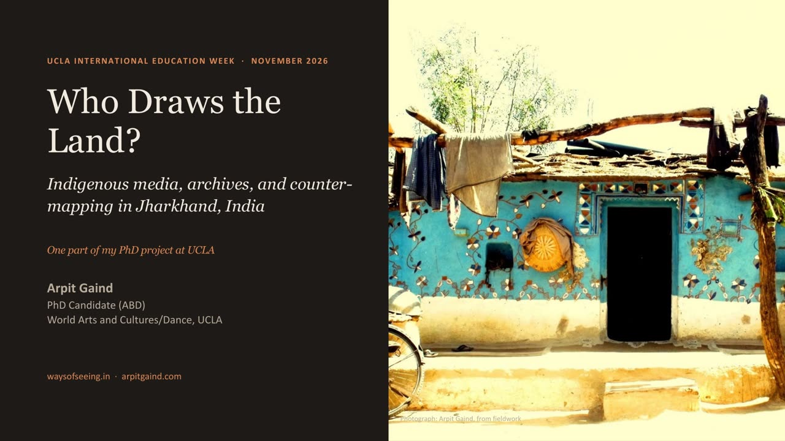

Who Draws the Land? Indigenous Media, Archives, and Counter-Mapping in Jharkhand, India
Adivasi (Indigenous) people in Jharkhand are not missing from the record. They are among the most photographed, counted, and documented people in South Asia; the problem is saturation, not absence. This talk, one part of my PhD project, introduces two digital humanities responses: Ways of Seeing, an archive that links to the makers’ own work rather than holding it, with its own access and consent rules; and its counter-mapping strand, three interactive maps that set satellite views, state figures, and documentary film side by side, and decide, as a matter of ethics, what not to show.
Click the still to watch here. Captions are burned into the video.